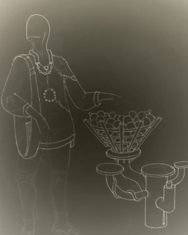
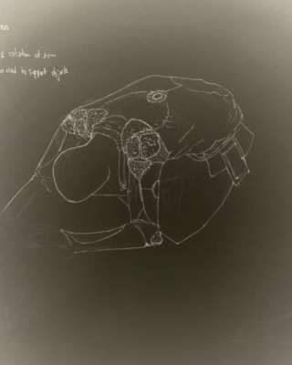

Humans

Yegwa Ukpo

Self Portrait
Yegwa Ukpo is the founder and Head Maintainer at Newtype, a maintenance practice focused on wisdom ecologies of food, shelter, clothing and being; exploring the use of play, playgrounds, storytelling and other indigenous technologies as tools for worldbuilding and the crafting of possible futures.
Yemi Awosile
Portrait by Akemi Kurosaka
Yemi Awosile is a designer living and working in London. Her work is
informed by cultural insights expressed primarily through textiles and
printed matter. The broader scope of her practice bridges design and
visual arts through social interventions. Recent projects include
collaborations with Tent Rotterdam, Tate Gallery, Contemporary And (C&)
magazine and the British Council. She trained as a textile designer at
the Royal College of Art and Chelsea College of Art. She is an Associate
Lecturer at Goldsmith, University of London teaching BA Design, Studio
Practice. She is a member of the Stanley Picker Gallery & Dorich House
Museum Advisory Group. Her investigation into materials can be seen in
the V&A Museum textiles handling collection.
Gallery

Anatomy of a Year Garment


Primer


Hyperculture is a philosophy and community built around an approach to making, taking care of and handling garments and other objects throughout their life and end of life.
Inspired by the fact that in a lot of indigenous cultures, objects were considered to be entities in their own right. With the spirit of the maker said to imbued into exemplary ones. Objects were entangled with the lives of their owners and the times they existed in. Even today, items belonging to certain personalities or that lived through particular eras are especially prized. Existing simultaneously as singular items with souls and as hyper-objects in the sense of hyper-text; relating to other objects and other hyper-objects, like their owners, former custodians, cultures and the maker traditions that informed their creation.
Projects

The Year Garment is a speculative object realised as part of a worldbuilding exercise for Newtype Studios. Developed further under the Hyperculture Manifold, it is imagined as a common item that people own, the year garment was seen as a garment that acted not only as an item of clothing, but also as a way of recording, transmitting and encoding experiences and knowledge.
The Year Garment exhibition was put together with support from the British Council and Ellen MacArthur Foundation as part of their Circular Design Lab 2019 grant.

